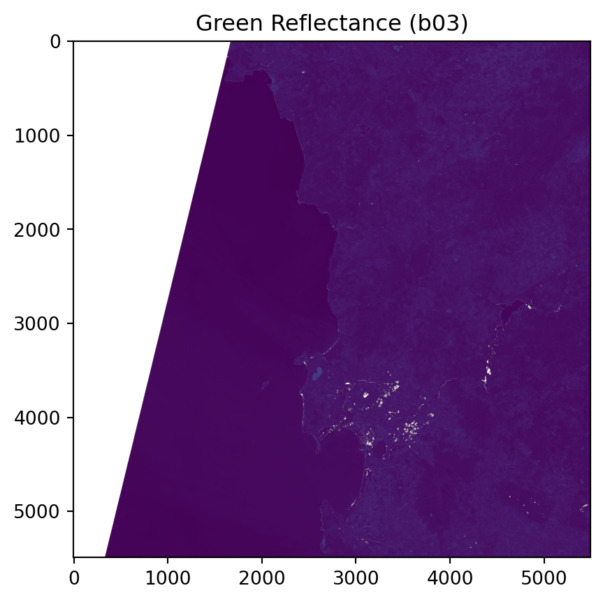
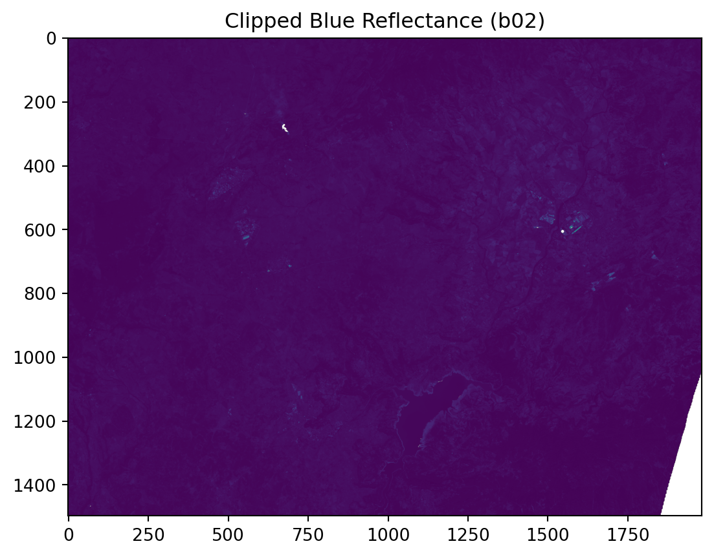
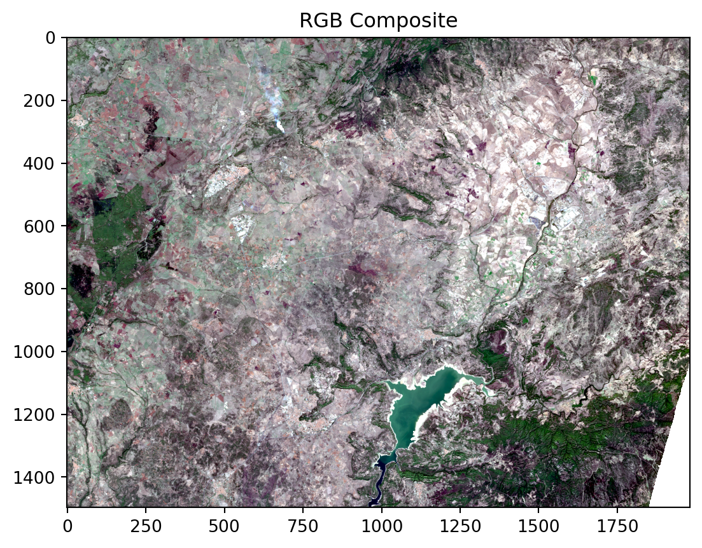
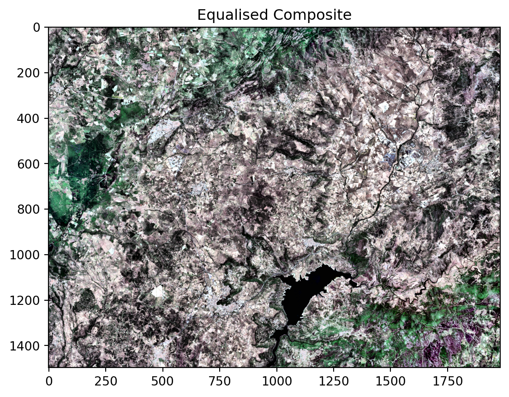
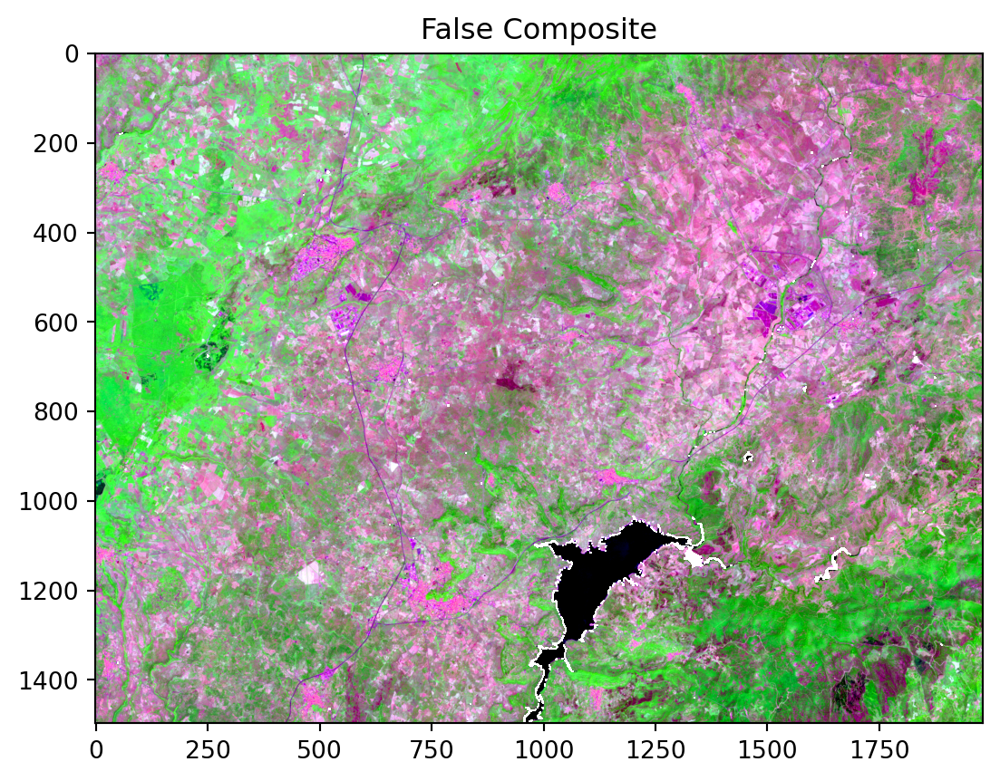
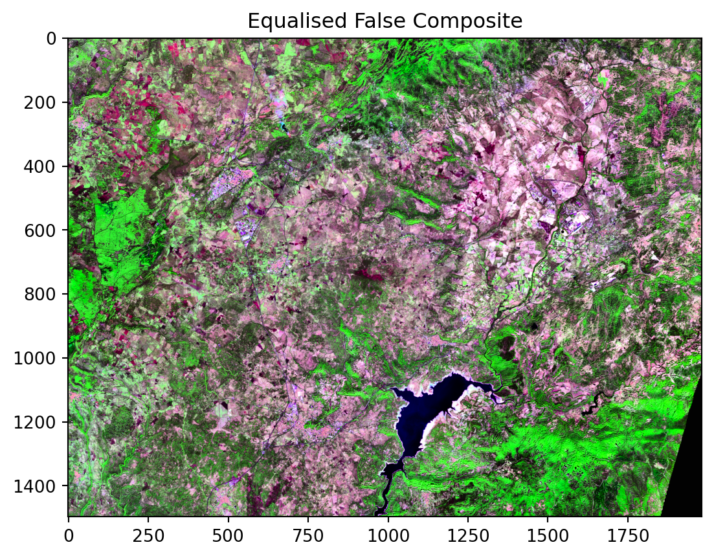
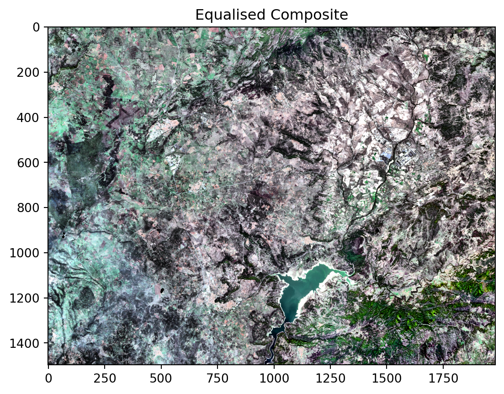
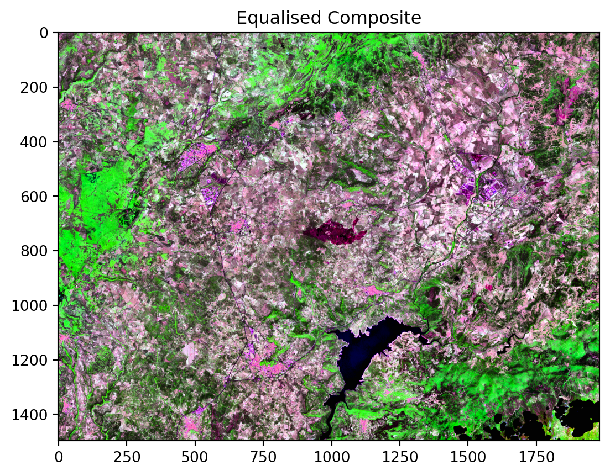

from distributed import LocalCluster
from pystac_client import Client
import numpy as np
import xarray as xr
import time
import matplotlib.pyplot as plt
from pyproj import Transformer
import cartopy.crs as ccrs
import cartopy.feature as cfeature
from skimage import exposure
from matplotlib.colors import BoundaryNorm, ListedColormap
from shapely.geometry import box Fire in Sardinia 2025 - Part 1
Introduction
Communities and ecosystems worldwide are under increasing threat from wildfires, a problem that is being made worse by climate change.
Monitoring these events is crucial, and satellite imagery is an invaluable tool in this effort. The Sentinel satellite missions offer valuable insights into the different stages of a fire. A True Colour Composite of Sentinel-2 data can be used to track smoke, False Colour Composites can clearly distinguish healthy vegetation from damaged or burnt areas. Furthermore, True- or False color composites can be combined with other data sources, such as Land Surface Temperature (LST) from Sentinel-3. Temperature anomalies retrieved from Sentinel-3 data are useful information to get a more comprehensive picture of a fire event.
The Fire Event
According to the Italian National Institute of Health (ISS), between January and July 2025, Italy experienced a significant number of wildfires, with approximately 700 recorded incidents burning over 320 square kilometres.
We will focus on a specific fire that occurred in the Province of Nuoro in the Italian region of Sardinia, on June 10th, 2025. The European Forest Fire Information System (EFFIS) estimated that it consumed an estimated 1000 hectares. Based on this area, we can expect it to be clearly visible in Sentinel-2 imagery with a 20-metre resolution.
The case study
This case study consists of a series of three notebooks:
- Part 1 - Compare Sentinel-2 True- and False-Color composites before and after a fire event
- Part 2 - Analyse fire intensity with Sentinel-2 and -3 data
- Part 3 - Assess burn severity with the normalised burn ratio (dNBR)
The three notebooks will guide you through a comprehensive remote sensing workflow for monitoring wildfires covering all stages of a fire life cycle: before, during, and after an event.
About this notebook
This notebook will take you through a practical example of how you can use Sentinel-2 data to visually compare an area before and after a wildfire event.
We will access Sentinel-2 data available at the EOPF STAC Catalog to compare the landscape before and after wildfire event. Such a comparison allows us to determine the extent of the damage caused by the wildfire. This comparison can be done by using different combinations of spectral bands to identify healthy vs. damaged vegetation.
What we will learn
- 💨 Create cloud-free layers from Sentinel-2 L2A data for a clear view of the surface at a fire location.
- ✂️ Extract and clip specific areas of interest from satellite imagery using a STAC catalog and reprojected bounding boxes.
- 🛰️ Set a starting point for wildfire events analysis by visualising vegetation and land conditions using Sentinel-2 L2A imagery.
Import libraries
Helper functions
This notebook makes use of a set of functions that are all listed inside the zarr_wf_utils.py script. Inside the script, we will find costumised functions that allow us to mask, normalise and extract specific areas of our items of interest.
# Import our utility functions
from zarr_wf_utils import (
validate_scl,
mask_sub_utm,
normalisation_str_gm,
lat_lon_to_utm_box,
zarr_mask_utm
)Setting up the environment
Defining parameters for querying the EOPF STAC catalog
As a first step, we need to define specific parameters for our query, including:
- two key dates for our comparison: one date for a pre-fire view, 3rd of June 2025 (one week before the event) and a second for the post-fire view on 21st June 2025 (10 days after)
- the data collection we are interested in, and
- bounding box information for the area of interest.
In addition, we set the appropriate re-projection parameters to ensure a smooth and efficient workflow.
# The timeframe and area of interest for our filtering
def_collection = 'sentinel-2-l2a' # collection
# Before the fire:
pre_f = '2025-10-12'
# After the fire:
post_f = '2025-10-29'
search_bbox = (8.847198,40.193395,8.938865,40.241895)
# Definition of the transformer parameters from lat/lon to UTM that ensure
# correct overlay of layers
transformer = Transformer.from_crs("EPSG:4326", "EPSG:32632", always_xy=True)
t_utm_to_deg = Transformer.from_crs("EPSG:32632","EPSG:4326", always_xy=True)Initiate a Dask cluster
In a next step we initiate a virtual Dask cluster. This cluster consists of a scheduler (the “brain”) and several workers (the “hands”), which enables faster processing of large datasets by breaking down tasks and running them in parallel.
A client is then created to manage communication between the code and this cluster.
For more information, feel free to visit the dask documentation and the tutorial How to use dask.
# To track the the performance the code will have
st = time.time()
cluster = LocalCluster()
client = cluster.get_client()
clientClient
Client-00b07c2c-00f2-11f1-9193-bac1550121bd
| Connection method: Cluster object | Cluster type: distributed.LocalCluster |
| Dashboard: http://127.0.0.1:8787/status |
Cluster Info
LocalCluster
b857b030
| Dashboard: http://127.0.0.1:8787/status | Workers: 4 |
| Total threads: 8 | Total memory: 31.34 GiB |
| Status: running | Using processes: True |
Scheduler Info
Scheduler
Scheduler-9c11f801-1c16-4609-a1f2-0a3831f24043
| Comm: tcp://127.0.0.1:46087 | Workers: 0 |
| Dashboard: http://127.0.0.1:8787/status | Total threads: 0 |
| Started: Just now | Total memory: 0 B |
Workers
Worker: 0
| Comm: tcp://127.0.0.1:33489 | Total threads: 2 |
| Dashboard: http://127.0.0.1:39791/status | Memory: 7.84 GiB |
| Nanny: tcp://127.0.0.1:33113 | |
| Local directory: /tmp/dask-scratch-space/worker-qqfhd2ug | |
Worker: 1
| Comm: tcp://127.0.0.1:44229 | Total threads: 2 |
| Dashboard: http://127.0.0.1:41689/status | Memory: 7.84 GiB |
| Nanny: tcp://127.0.0.1:46487 | |
| Local directory: /tmp/dask-scratch-space/worker-jjbnverv | |
Worker: 2
| Comm: tcp://127.0.0.1:38857 | Total threads: 2 |
| Dashboard: http://127.0.0.1:45397/status | Memory: 7.84 GiB |
| Nanny: tcp://127.0.0.1:34565 | |
| Local directory: /tmp/dask-scratch-space/worker-30ct8u1e | |
Worker: 3
| Comm: tcp://127.0.0.1:35741 | Total threads: 2 |
| Dashboard: http://127.0.0.1:36735/status | Memory: 7.84 GiB |
| Nanny: tcp://127.0.0.1:34671 | |
| Local directory: /tmp/dask-scratch-space/worker-tymjytls | |
Establish a connection to the EOPF STAC Catalog
Data is retrieved from the endpoint of the EOPF STAC Catalog. We can do this with the function Client.open() from the pystac_client library.
eopf_stac_api_root_endpoint = "https://stac.core.eopf.eodc.eu/" #root starting point
eopf_catalog = Client.open(url=eopf_stac_api_root_endpoint) # calls the selected urlPre-Fire Visualisation
The first step is to create a visual representation of our area of interest for a day before the fire occured: 3 June 2025. We will use the parameters we defined at the beginning to query the STAC collection and retrieve the specific pre-fire images needed for our analysis.
With the search() function, you can query a STAC catalog based on given keyword arguments. As a result of the search, you see that one Item is returned from the STAC Catalog.
# Interest timeframe parameters for the filtering
date_pre = pre_f + 'T00:00:00Z/' + pre_f + 'T23:59:59.999999Z' # interest period
s2_col = list(eopf_catalog.search(
bbox= search_bbox, # area
datetime= date_pre, #time frame
collections=def_collection # collection
).item_collection())
av_urls = [item.assets["product"].href for item in s2_col] # stores the available Items URLs
print("Search Results:")
print('Total Items Found for Sentinel-2 L2A over Sardinia: ',len(av_urls))Search Results:
Total Items Found for Sentinel-2 L2A over Sardinia: 1Now, we can retrieve the item and directly and open it as a xarray.DataTree. In addition, key information from the item’s properties is also extracted to verify key properties of the item.
# We are interested in the datasets contained in the measurements bands for True Colour and False Colour Composites.
s2_zarr = xr.open_datatree(
av_urls[0], engine="zarr", #we always get the earliest one (the first available item goes last)
chunks={},
decode_timedelta=False
)
# Store interest parameters for further plotting:
date = s2_zarr.attrs['stac_discovery']['properties']['start_datetime'][:10]
time_zarr = s2_zarr.attrs['stac_discovery']['properties']['start_datetime'][11:19]
# target_crs = s2_zarr.attrs["stac_discovery"]["properties"]["proj:epsg"]
print(f'Item for the {date} at {time_zarr}')Item for the 2025-10-12 at 10:20:01The spectral bands we will need for our analysis are found within the /reflectance group, specifically under the r20m subgroup.
Before directly processing our assets of interest, we will filter out invalid pixels, such as pixels containing clouds, cloud shadows, or areas with no data. We will use the Scene Classification Layer (SCL) available inside the .zarr item, which is a separate asset located under the /classification/r20m group.
By using the pre-defined validate_scl() function, we can create a boolean mask that masks out invalid pixels.
# Extract the resolution group we are interested to analyse over:
zarr_meas = s2_zarr.measurements.reflectance.r20m
# Extract the Scene Classification Layer at 20m resolution:
l2a_class_20m = s2_zarr.conditions.mask.l2a_classification.r20m.scl
# Apply the function `validatae_scl` to mask out invalid pixels
valid_mask = validate_scl(l2a_class_20m)The visualisation we are intending to create covers a larger extent than the specific fire area. This helps us to better understand the event’s overall spatial extent. For this, we generate a bounding box to visually pinpoint the fire’s precise location within a wider composite image.
# Defining a larger bounding box for better visualisation:
bbox_vis = (8.649555,40.073583,9.127893,40.343840)
# A fixed geographic bounding box to highlight the AOI in the map format
map_box = search_bboxIn next step, we need to reproject the area of interest from EPSG: 4326 to UTM coordinates. Once the area is defined, our loaded data (zarr_meas) is masked using the defined bbox_utm. After extracting the area, only the valid pixels are selected.
# A new list with the converted UTM coordinates
bbox_utm = lat_lon_to_utm_box((bbox_vis[0], bbox_vis[1]),(bbox_vis[2], bbox_vis[3]),transformer)
# Use the box() function to create a polygon from the coordinates
map_box = box(map_box[0],map_box[1],map_box[2],map_box[3])
# Boolean mask for the 'x' dimension (longitude/easting)
x_mask = (zarr_meas['x'] >= bbox_utm[0]) & (zarr_meas['x'] <= bbox_utm[2])
# Boolean mask for the 'y' dimension (latitude/northing)
y_mask = (zarr_meas['y'] >= bbox_utm[1]) & (zarr_meas['y'] <= bbox_utm[3])
# Combined mask for the bounding box
bbox_mask = x_mask & y_mask
# Extract row and column indices where the mask is True
cols,rows = np.where(bbox_mask)Pre-Fire True Colour Image
Once we have created the necessary masks, we can proceed to create True Color Image composites. For the composite creation, zarr_meas contains the assets we are interested in. The TCI composite makes use of the red (B04), green (B03), and blue (B02) bands to create a view that looks natural to the human eye.
xarray’s where() function allows us to apply the SLC filtering we had previously defined.
# True colour channels we are interested to retrieve composite:
tc_red = 'b04'
tc_green= 'b03'
tc_blue = 'b02'
# The tc_red, tc_green, and tc_blue variables are inputs specifying the band names
red = zarr_meas[tc_red].where(valid_mask)
gre = zarr_meas[tc_green].where(valid_mask)
blu = zarr_meas[tc_blue].where(valid_mask)
# Visualising the green band:
plt.imshow(gre)
plt.title('Green Reflectance (b03)')Text(0.5, 1.0, 'Green Reflectance (b03)')
The next step is to clip the retrieved asset to our area of interest which we defined earlier with specific bounding box information. We can apply the mask_sub_utm() function, which will masks the three bands to the defined bounding box.
It is important to point out that until now, we have not accessed on disk the data. Once we add the .values argument to the resulting _ from mask_sub_utm(), the data is accessed.
.zarr contains x and y information for each of the pixels, and storing these values for a further geolocalisation of our item of interest is essential.
You can visualise the blue (B02) band to verify the clipped area.
# The mask_sub_utm() function takes the bands and masks them to the valid rows and columns from the bbox_mask
red = mask_sub_utm(red,rows, cols).values
gre = mask_sub_utm(gre,rows, cols).values
blu = mask_sub_utm(blu,rows, cols).values
# The zarr_meas group is the input dataset containing the dimensions
# by slicing the 'y' dimension array based on the minimum and maximum row indices
y_zarr = zarr_meas['y'].isel(y=slice(rows.min(), rows.max() + 1)).values
# also, the same for the 'x' dimension array based on the minimum and maximum column indices
x_zarr = zarr_meas['x'].isel(x=slice(cols.min(), cols.max() + 1)).values
# We transform the original x,y bbox from our clip to decimal degree coordinates
map_ext_deg_pre = list(t_utm_to_deg.transform(np.nanmin(x_zarr),np.nanmin(y_zarr)) +
t_utm_to_deg.transform(np.nanmax(x_zarr),np.nanmax(y_zarr)))
# Visualising the clipped red band:
plt.imshow(blu)
plt.title('Clipped Blue Reflectance (b02)')Text(0.5, 1.0, 'Clipped Blue Reflectance (b02)')
To create the composite image, we need to normalise each of the input assets. Normalisation ensures that the bands have a consistent and predictable range of values. This supports optimal data processing and removes the influence of external factors (like changing light conditions) allowing for a meaningful comparison among generated composites.
The normalisation_str_gm() function achieves this by scaling the reflectance values to a standard range (0-255) using the percentile-based method.
Once the values for our three bands have been normalised, they can be stacked in an RGB format to generate the initial True Colour Image (TCI).
# Input: percentile range for contrast stretching
contrast_stretch_percentile=(2, 98)
# Input: gamma correction value
gamma=1.8
# Apply normalisation to the red, green and blue bands using the specified percentile and gamma values
red_processed = normalisation_str_gm(red, *contrast_stretch_percentile, gamma)
green_processed = normalisation_str_gm(gre, *contrast_stretch_percentile, gamma)
blue_processed = normalisation_str_gm(blu, *contrast_stretch_percentile, gamma)
# We stack the processed red, green, and blue arrays
rgb_composite_sm = np.dstack((red_processed, green_processed, blue_processed)).astype(np.float32)
plt.imshow(rgb_composite_sm)
plt.title('RGB Composite')Text(0.5, 1.0, 'RGB Composite')
The image is currently displayed with a neutral colour ramp and with the non-valid masked pixels. Some of the details can be enhanced based on the information the overall composite contains.
For this, we can apply a histogram equalisation. This technique will adjust the brightness and improve the visibility of details within our image.
Through the skimage library, we can apply the exposure.equalize_adapthist() function. This method creates a more natural-looking and visually balanced composite.
#Adding equalisation from skimage:
fire_tc = exposure.equalize_adapthist(rgb_composite_sm)
plt.imshow(fire_tc)
plt.title('Equalised Composite') # Add a title for clarityText(0.5, 1.0, 'Equalised Composite')
Pre-Fire False Colour Image
Next, a False Colour Image (FCI) is created to provide a clearer overview of vegetation health.
This image uses the Shortwave Infrared (B12), Near-Infrared (B8a), and Blue (B02) bands. This specific combination enhances the distinction between healthy vegetation, which appears green, and damaged or burnt areas, which are shown in vivid, contrasting colours.
This False Colour composite will help us to better highlight the full extent of the fire.
# The false colour channels we are interested to retrieve coposite:
fc_swir = 'b12'
fc_nir = 'b8a'
fc_blue = 'b02'Following the same principle as of the creation of the True Colour composite, we can choose the relevant bands and apply the masking and clipping steps.
# The zarr_meas object is the input dataset containing the bands, fc_red, fc_green, fc_blue specify the bands
# The where() method is used to apply the boolean valid_mask to the bands
swir = zarr_meas[fc_swir].where(valid_mask)
nir = zarr_meas[fc_nir].where(valid_mask)
blu = zarr_meas[fc_blue].where(valid_mask)
# The mask_sub_utm() function takes the bands and masks them to the specified rows and columns
swir = mask_sub_utm(swir,rows, cols).values
nir = mask_sub_utm(nir,rows, cols).values
blu = mask_sub_utm(blu,rows, cols).valuesThen, we can apply the normalisation function, followed by the stacking of the three bands. The False Colour composite $$$ explain the colouring
# Apply the normalisation function to each band
swir_processed = normalisation_str_gm(swir, *contrast_stretch_percentile, gamma)
nir_processed = normalisation_str_gm(nir, *contrast_stretch_percentile, gamma)
blue_processed = normalisation_str_gm(blu, *contrast_stretch_percentile, gamma)
# Use np.dstack to create a false-colour composite from the processed bands
false_composite= np.dstack((swir_processed, nir_processed, blue_processed)).astype(np.float32)
# Output:
plt.imshow(false_composite)
plt.title('False Composite')Text(0.5, 1.0, 'False Composite')
We then continue and also apply the equalisation function.
# Apply adaptive histogram equalisation to enhance contrast for fire detection
fire_fc = exposure.equalize_adapthist(false_composite)
# Create a figure to plot
plt.imshow(fire_fc)
plt.title('Equalised False Composite')Text(0.5, 1.0, 'Equalised False Composite')
Post-Fire Visualisation
Now, we will replicate the same visualisation for a specific time after the fire: 10 June 2025. Considering this new date, we will retrieve images from the same collection that correspond to our new timeframe of interest.
date_post = post_f + 'T00:00:00Z/' + post_f + 'T23:59:59.999999Z' # interest period
s2_post = list(eopf_catalog.search(
bbox= search_bbox,
datetime= date_post,
collections=def_collection).item_collection())
av_urls = [item.assets["product"].href for item in s2_post]
av_urls['https://objects.eodc.eu:443/e05ab01a9d56408d82ac32d69a5aae2a:202510-s02msil2a-eu/29/products/cpm_v256/S2C_MSIL2A_20251029T101151_N0511_R022_T32TMK_20251029T141217.zarr']We open again the the retrieved item from our filtered results, followed by the masking and validation steps to ensure a clean, cloud-free composite.
post_zarr = xr.open_datatree(
av_urls[0], engine="zarr", #we always get the earliest one (last)
chunks={},
decode_timedelta=False
)
zarr_meas = post_zarr.measurements.reflectance.r20m
# Extractthe cloud free mask at 20m resolution:
l2a_class_20m = post_zarr.conditions.mask.l2a_classification.r20m.scl
valid_mask = validate_scl(l2a_class_20m) # Boolean mask (10980x10980)Post-Fire True Colour Image
Once invalid pixels are filtered out, we can generate the corresponding True-Color composite to get a view of our area of interest after the fire event. We again clip the retrieved assets to our specific bounding box.
# Create UTM masks for rows and columns based on the bounding box.
cols_post, rows_post = zarr_mask_utm(bbox_utm, zarr_meas)
# Select the red, green, and blue bands and apply the valid mask.
red = zarr_meas[tc_red].where(valid_mask)
gre = zarr_meas[tc_green].where(valid_mask)
blu = zarr_meas[tc_blue].where(valid_mask)
# Mask and clip the selected bands using the row and column indices.
red = mask_sub_utm(red,rows_post, cols_post).values
gre = mask_sub_utm(gre,rows_post, cols_post).values
blu = mask_sub_utm(blu,rows_post, cols_post).values
# Slice the y-dimension values using the new row indices.
y_zarr = zarr_meas['y'].isel(y=slice(rows_post.min(), rows_post.max() + 1)).values
# Slice the x-dimension values using the new column indices.
x_zarr = zarr_meas['x'].isel(x=slice(cols_post.min(), cols_post.max() + 1)).values
# We transform the original x,y bbox from our clip to decimal degree coordinates
map_ext_deg_post = list(t_utm_to_deg.transform(np.nanmin(x_zarr),np.nanmin(y_zarr)) +
t_utm_to_deg.transform(np.nanmax(x_zarr),np.nanmax(y_zarr)))And, once the new area is defined, we normalise, stack and equalize the composite.
# Apply normalisation and gamma correction to the red, green, and blue bands.
red_processed = normalisation_str_gm(red, *contrast_stretch_percentile, gamma)
green_processed = normalisation_str_gm(gre, *contrast_stretch_percentile, gamma)
blue_processed = normalisation_str_gm(blu, *contrast_stretch_percentile, gamma)
# Stack the processed bands to create a single true-colour composite image.
rgb_composite_sm = np.dstack((red_processed, green_processed, blue_processed)).astype(np.float32)
# Apply adaptive histogram equalisation to enhance the composite image.
tc_post = exposure.equalize_adapthist(rgb_composite_sm)
plt.imshow(tc_post)
plt.title('Equalised Composite') # Add a title for clarityText(0.5, 1.0, 'Equalised Composite')
Post-Fire False Colour Image
And as the last processing step, we create the False Colour composite for the same day, to clearly visualise the extent of the burn scars and vegetation recovery.
# Select the red, green, and blue bands and apply the valid mask.
swir = zarr_meas[fc_swir].where(valid_mask)
nir = zarr_meas[fc_nir].where(valid_mask)
blu = zarr_meas[fc_blue].where(valid_mask)
# Mask and clip the selected bands using the row and column indices.
swir = mask_sub_utm(swir,rows_post, cols_post).values
nir = mask_sub_utm(nir,rows_post, cols_post).values
blu = mask_sub_utm(blu,rows_post, cols_post).values
# Apply normalisation and gamma correction to the red, green, and blue bands.
swir_processed = normalisation_str_gm(swir, *contrast_stretch_percentile, gamma)
nir_processed = normalisation_str_gm(nir, *contrast_stretch_percentile, gamma)
blue_processed = normalisation_str_gm(blu, *contrast_stretch_percentile, gamma)
# Stack the processed bands to create a single false-colour composite image.
false_composite= np.dstack((swir_processed, nir_processed, blue_processed)).astype(np.float32)
# Apply adaptive histogram equalisation to enhance the composite image.
fc_post = exposure.equalize_adapthist(false_composite)
plt.imshow(fc_post)
plt.title('Equalised Composite') # Add a title for clarityText(0.5, 1.0, 'Equalised Composite')
Compare pre- and post-fire composites
As a last step, we will georeference and visualise the created composites together, presenting it in a way that makes it easier to recognise and understand the monitored areas.
We will use the cartopy library to pinpoint the location of our georeferenced datasets based on their CRS and geospatial bounding box. The visualisation will be a 2x2 matrix, offering a comprehensive, multi-channel overview.
Finally, the plot will be enhanced by adding key elements such as grid lines for improved geolocation, a clear title, and a bounding box to highlight the specific area of the fire. This approach allows for a direct visual comparison of the landscape’s state before and after the event.
data_ll = ccrs.PlateCarree()
fig, axs = plt.subplots(2, 2, figsize=(15, 9), subplot_kw={'projection': data_ll})
# Pre fire TCI
ax1 = axs[0,0]
ax1.imshow(fire_tc, origin='upper',
extent=[map_ext_deg_pre[0],map_ext_deg_pre[2],
map_ext_deg_pre[1],map_ext_deg_pre[3]], # item
transform=data_ll)
ax1.add_geometries(map_box, crs=data_ll, facecolor='none',
edgecolor='yellow', linewidth=2, linestyle='-')
ax1.gridlines(draw_labels=True, dms=True, x_inline=False, y_inline=False) # gridlines and labels
ax1.set_title(f'TCI for {pre_f}')
# Pre fire FCI
ax2 = axs[0,1]
ax2.imshow(fire_fc, origin='upper',
extent=[map_ext_deg_pre[0],map_ext_deg_pre[2],
map_ext_deg_pre[1],map_ext_deg_pre[3]], # item
transform=data_ll)
ax2.add_geometries(map_box, crs=data_ll, facecolor='none',
edgecolor='yellow', linewidth=2, linestyle='-')
ax2.gridlines(draw_labels=True, dms=True, x_inline=False, y_inline=False) # gridlines and labels
ax2.set_title(f'FCI for {pre_f}')
#Post fire TCO
ax3 = axs[1,0]
ax3.imshow(tc_post, origin='upper',
extent=[map_ext_deg_post[0],map_ext_deg_post[2],
map_ext_deg_post[1],map_ext_deg_post[3]], # item
transform=data_ll)
ax3.add_geometries(map_box, crs=data_ll, facecolor='none',
edgecolor='yellow', linewidth=2, linestyle='-')
ax3.gridlines(draw_labels=True, dms=True, x_inline=False, y_inline=False) # gridlines and labels
ax3.set_title(f'TCI for {post_f}')
# Post fire FCI
ax4 = axs[1,1]
ax4.imshow(fc_post, origin='upper',
extent=[map_ext_deg_post[0],map_ext_deg_post[2],
map_ext_deg_post[1],map_ext_deg_post[3]], # item
transform=data_ll)
ax4.add_geometries(map_box, crs=data_ll, facecolor='none',
edgecolor='yellow', linewidth=2, linestyle='-')
ax4.gridlines(draw_labels=True, dms=True, x_inline=False, y_inline=False) # gridlines and labels
ax4.set_title(f'FCI for {post_f}')
# Adjust the layout to prevent titles from overlapping
fig.suptitle(f'Sentinel-2 L2A TCI and FCI', fontsize=16)
# Display the combined plot
plt.show()
Calculating processing time
et = time.time()
total_t = et - st
print('Total Running Time: ', total_t,' seconds')Total Running Time: 56.02720069885254 secondsAs our plots show, the True Colour Image reveals a clear change in the state of the vegetation, with an evident burn scar visible on the ground. The False Colour Image also highlights a significant change in the spectral response, which precisely encloses the spot where the fire occurred.
It is important to note the efficiency of this monitoring workflow. The entire process from defining the area of interest to searching, accessing, processing, and visualising the data takes less than a minute, without the need to download data.
Conclusion
Having processed the key spectral bands, we have successfully established a visual baseline for our monitoring workflow.
The generation of these composites allows us to quickly gain an overview of the spatial changes resulting from a fire event, as observed by Sentinel-2 L-2A.
This workflow is highly replicable, enabling us to replicate these defined steps at various points in time. This ability to generate consistent visualisations will allow us to understand the full dynamics of a fire’s event lifecycle over time, from its beginning to the subsequent recovery of the landscape.
What’s next?
In the next tutorial, we will apply the workflow we have generated to create a True Colour Image from Sentinel-2 L2A data for the day of the fire.
To obtain a more detailed overview of the fire’s state, we will integrate a new dataset into our workflow: Sentinel-3 data. This will enable us to analyse thermal information and pinpoint the active fire’s location.